/math-7204a8dfdb61b3496295b04c057e337d.png "X_0") は標準偏差によって割られます。
は標準偏差によって割られます。
内容 |
部分最小二乗法は多くの修正された説明変数と既知の目的変数を使用して不明な目的変数を予測するモデルを作成するために使用します。このような場合、複数の線形フィットは、通常、オーバーフィットを起こすので適切ではありません。部分最小二乗法はしばしば、混合物のスペクトルからどのような内容物が含まれているのか推測する際に使用されます。
部分最小二乗法は因子を説明変数の線形結合によって抽出し、抽出された因子空間に対して説明変数と目的変数を投影します。
欠損値がある観測データは分析から除外、つまりリストワイズ形式で除外されます。
仮に、観測データ数、説明変数、目的変数を順にn、m、r とします。説明変数はサイズが
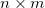
である行列Xで表わされ、目的変数は同じようにサイズが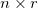
である行列Yで表わします。行列XとYのそれぞれの列から平均値を引き、 と 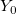
のようにします。行列内の各列、は標準偏差によって割られます。
Originは2種類の手法、Woldの反復法と特異値分解(SVD)で抽出した因子を計算します。
初期ベクトルとしてuを使用します。r=1で初期化したu=Yの場合、他の時はuはランダムな値のベクトルになります。
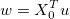
となり、wを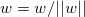
で正規化します。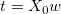
となり、tを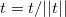
で正規化します。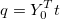
となり、qを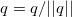
で正規化します。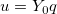
wが収束すると更新され、
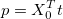
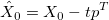
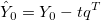
そしてk因子は作成できます。k因子についてのx 重み、x スコア、yスコア、x ローディング、yローディングはそれぞれ行列W、T、U、P、Qで表わせます。
Originでは各因子のx スコア、yスコア、x ローディング、yローディングの符号は、各因子のx重みの合計を行う事で正規化され、正の数にします。
wは
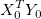
の正規化した第一左辺特異ベクトルで、そして、k因子を抽出します。
OriginはLeave-one-out手法で最適な因子数を検出します。この手法は1つの観測を省き、他の観測値だけでモデルを作成してその省いた観測値に対して反応を推測します。
PRESSは予測した残差の二乗和です。これは次式のように計算されます。
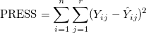
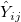
はLeave-one-out 手法で予測されたY値です。Note：もし変数がスケール化されている場合、PRESSはそのスケール化した結果になります。
因子の最大数がkの場合、PRESSは 0, 1, ... k因子分まで計算します。0因子の場合、
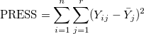
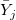
はj番目のY値に関する平均値です。PRESSのルート平均はPRESSの平方根を取った平均値です。定義は、次のようになります。
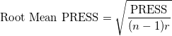
Originは最小PRESSのルート平均を使用して交差確認内で最適な因子数を探します。
モデルが作成できると、フィットしたモデルの係数によって反応の予測が可能になります。係数は、重みとローディングの行列から計算されます。
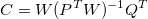
そして、予測された反応は次のように計算されます。
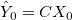
ここで、変数は中心化されています。変数がスケール化もされている場合、反応もスケール化されて返されます。
i番目のX変数に因子寄与します。
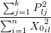
X変数の因子寄与は次の通りです。
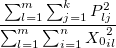
i番目のY変数に因子寄与します。
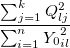
Y変数の因子寄与は次の通りです。
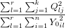
VIP(投影に影響を与える変数)は、各説明変数が目的変数では平均分散を有している理由を説明します。
Xの残差は、
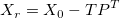
Yの残差は、
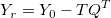
変数がスケール化されている場合、残差もスケール化されて返されます。
i番目の観測に対するXモデルまでの距離
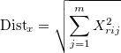
i番目の観測に対するYモデルまでの距離
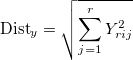
1番目の観測に関するT二乗値
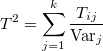
ここで、
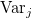
はj番目の因子に対するXスコアの分散を表します。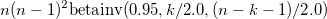
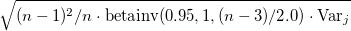
ここで、はj番目の因子に対するXスコアまたはYスコアの分散を表します。